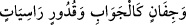
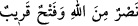
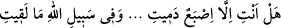
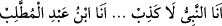
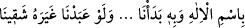

/…havuzlar kadar (geniş) leğenlerden, sabit kazanlardan...”
(Sebe’, 34/13).
“__WORD__ / Allah’tan yardım ve yakın bir fetih.” (es-Saff, 61/13). âyetleri
ve benzerleri gibi.
Yine Hz. Peygamber (s.a.)’in değerli sözlerinden kasıt ve azim olmaksızın rastgele
vezinli olarak gelenler de böyledir. Meselâ bir gazvede Hz. Peygamber (s.a.)’in ayağı
sürçmüş, parmağına taş isabet etmiş ve parmağı kanamıştı. İşte o zaman şöyle
buyurmuştu:
“Sen ancak kanayan bir parmaksın
Çektiğin bu sıkıntı da Allah yolundadır.”[173]
Yine Huneyn günü binitinden yere inip duâ ettiğinde ve Allah’tan yardım isteğinde,
yine Mekke’nin fethinde şöyle buyurmuştu:
“Ben peygamberim bunda yalan yok.
Ben Abdulmuttalib’in oğluyum”
Hendek günü de şöyle buyurmuştu:
“Allah’ın adıyla ve O’nunla başladık.
Şayet O’ndan başkasına ibâdet edersek bedbaht oluruz”
Bu örnekler dışında ister normal konuşma isterse de hutbe esnasında vâki olan böyle
vezin ve kafiyeli sözler şiir dışındadır.
İster vezinli ister vezinsiz olsun Kur’an’da vâki olan şiirden murad mantıkî şiirdir.
Mantıkî şiir ıstılâhî şiirden daha revaçtadır. Râğıb der ki: “Kur’an’da bazı kelimelerin
vezin ve kafiyeli olarak vâki olmasından dolayı bazı kâfirler Hz. Peygamber (s.a.)’e “O
şairdir” demişlerdir. Bazı muhakkıklar der ki: Kâfirler bu sözleriyle Hz. Peygamber
(s.a.)’in yalancı olduğunu kasdetmişlerdir. Çünkü Kur’an’ın zâhiri şiirin üslûbuna göre
değildir. Belâğat ehli Araplar şöyle dursun fasih konuşamayan Acemler’e bile bu durum
gizli değildir. Şairlerin sözleri çoğunlukla yalan olduğu için kâfirler de Hz. Peygamber
(s.a.)’e yalan/yalancı iftirâsında bulunmuşlardır. Bundan dolayı yalancı delillere “şiir”
denilir.”
Seyyid Şerif Cürcânî Hâşiyetü’l-Metâli’de der ki: “Şiir seçkin kimselere ve halka